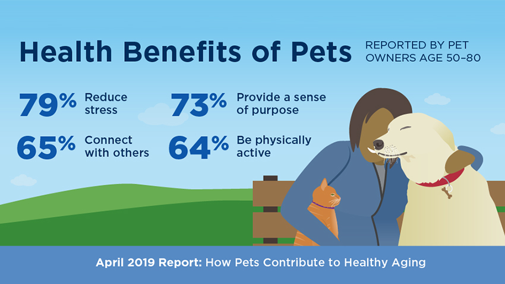

Physically
Mentally/Emotionally
You also benefit by having a loyal companion, a best friend, that will love you unconditionally. Like John Grogan, himself said,
“A dog has no use for fancy cars or big homes or designer clothes. Status symbol means nothing to him. A waterlogged stick will do just fine. A dog judges others not by their color or creed or class but by who they are inside. A dog doesn't care if you are rich or poor, educated or illiterate, clever or dull. Give him your heart and he will give you his.”